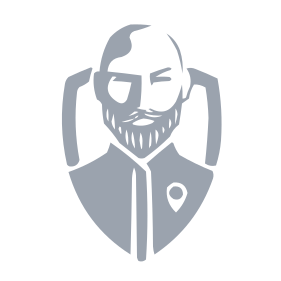
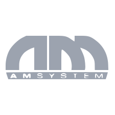

-
Freelance Developer & Hardware Technical Service
Realizo y configuro soluciones informáticas para particulares o pequeñas empresas, creando páginas webs, landings pages y portales ERP para la gestión empresarial. También ofrezo servicio técnico de equipos electrónicos realizando tareas de reparación, mantenimiento y actualización.
-

Desarrollador Frontend - Guru Tech VR
Desarrollo en entornos de realidad virtual con enfoque en el frontend y aplicando técnicas UI/UX con el fin de crear interfaces intuitivas y amigables para el usuario final.
-

Desarrollador Frontend - AM System
Formación Dual durante mi estapa en un ciclo superior de desarrollo web. Realización de funciones de soporte al desarrollo de aplicaciones multiplataforma, creando componentes y aportando escalabilidad y reusabilidad al código. Encargado de la creación y mantenimiento de varias landing pages para la venta de servicios.